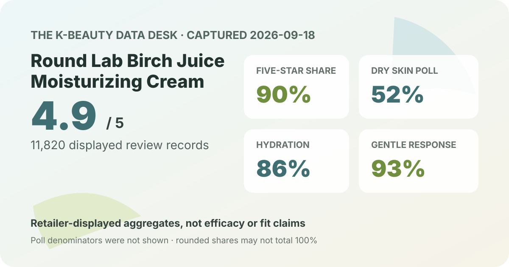
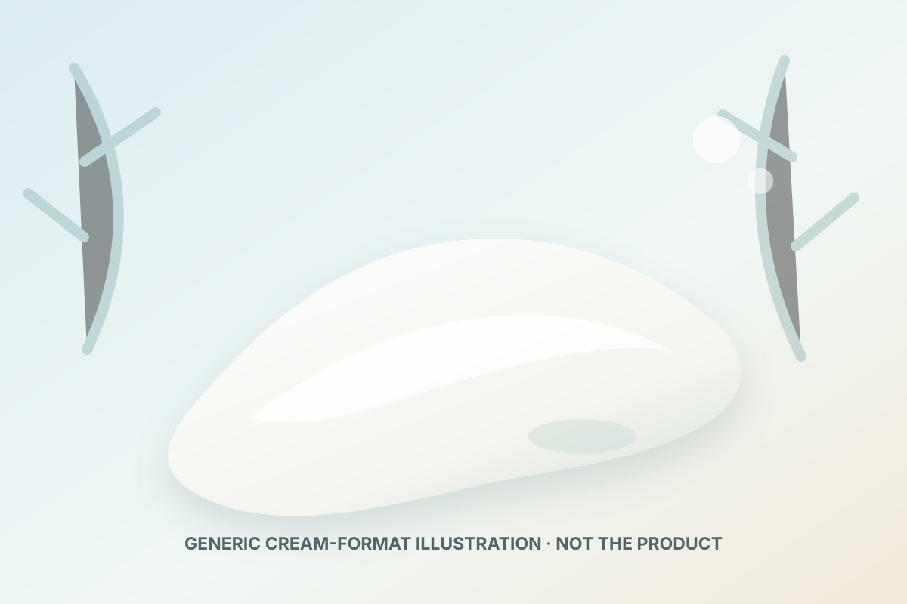

Aggregate data captured September 18, 2026. This article uses only the product title, offer, rating, rating distribution, displayed surveys, and anonymous summary themes shown on Olive Young Korea. It does not reproduce or translate an individual review, reviewer name, or user photo.

The short version: the listing averaged 4.9 stars across 11,820 review records. Five-star ratings accounted for 90% of the displayed distribution. Dry skin was the largest skin-type response at 52%, hydration led the concern poll at 86%, and 93% selected the gentle response.
The average displayed rating was 4.9 out of 5. The detail panel showed 90% five-star, 7% four-star, 2% three-star, 0% two-star, and 0% one-star. Those rounded shares total 99%, so they should not be converted into exact record counts. The missing percentage point is consistent with presentation rounding, not evidence that a rating category was omitted.
A five-figure base makes the displayed average less sensitive to one unusual score than a tiny sample, but scale does not remove selection bias. This is a retailer feedback pool, not a controlled trial, an independently audited unique-buyer count, a long-term safety registry, or a forecast for any one routine. The storefront also says linked feedback may combine materially identical configurations with different bundles or packaging.
The captured skin-type poll displayed 52% dry, 37% combination, and 11% oily. Dry-skin respondents formed the largest group and all displayed shares add to 100%. That makes the poll useful for describing who was represented, but it does not establish which skin type benefits most.
The 52% figure is not a success rate among dry-skin users. The retailer did not display a separate participant count for the poll, and the labels are self-selected. Climate, season, routine, application amount, age, concurrent products, sensitivities, and the reason a respondent chose a skin-type label were not controlled.
The concern poll showed 86% hydration, 14% soothing, and 1% wrinkle or brightening. Those rounded values total 101%. Hydration was overwhelmingly the most represented concern, which fits the merchandising context of a moisturizing cream. It still does not show that 86% experienced an objectively measured increase in hydration or that the product caused one.
The retailer's anonymous automated summary classified 96% of recent feedback as positive and grouped discussion around replenished moisture, a fresh or non-sticky finish, and mild-feeling use. Those are broad synthesized themes, not quotations, exact prevalence estimates, or independently verified performance claims. The summary cannot preserve every qualification, negative experience, routine difference, or skin condition behind the source feedback.
The irritation poll displayed 93% gentle, 6% ordinary, and 1% felt irritation. This is a strong majority perception signal in the captured interface, but it is not an adverse-event rate, allergy test, dermatologist assessment, or guarantee that a new user will tolerate the formula.
The separate poll denominator was not shown. Individual reactions can differ with allergies, barrier condition, amount, frequency, other actives, and regional formula. If you have a known allergy, diagnosed condition, prescription routine, pregnancy-related ingredient question, or history of serious reactions, the current ingredient list and qualified guidance matter more than the majority label.

Only a category-level description is responsible here. A moisturizing cream is generally a leave-on emulsion designed to spread as a more cushioned layer than a watery toner or serum. That broad format does not reveal this product's exact density, slip, tack, absorption speed, scent, residue, pilling behavior, finish under sunscreen, or comfort in a particular climate. I did not open, apply, smell, spread, or wear it.
The local visual is deliberately brand-neutral and code-drawn. It illustrates a generic cream swatch without copying the retailer's packaging, official product photographs, or shopper images. Likewise, the English working name “Birch Juice Moisturizing Cream” identifies the product family; it does not establish the amount, grade, or function of birch-derived material or any other ingredient.
At capture, the Korean listing displayed a ₩44,000 reference price and a ₩27,300 promotional price. The title described an 80 ml plus 80 ml double set with a 40 ml miniature. The storefront's unit-price line appeared to calculate from the two full-size creams, so the miniature should be treated as a promotion rather than assumed permanent pack volume.
Promotions, gifts, stock, taxes, shipping, seller, and regional configuration can change. The captured amounts are dated Korean-market context, not a current quote or savings guarantee. When comparing value, use the exact usable amount, final checkout total, shelf-life information, return terms, and whether you actually want a double set. A lower per-milliliter price is not useful if the formula or volume does not fit your routine.
This capture did not preserve a complete current ingredient list or verified directions. It therefore does not support an estimate of birch-derived ingredient content, fragrance status, alcohol status, active concentration, comedogenicity, pregnancy suitability, or regional formula equivalence. Neither the 4.9 average nor the displayed polls can fill those gaps.
Dry skin was the largest displayed response at 52%. That means dry-skin respondents were well represented in the poll; it does not prove superior performance or predict your result.
No. Hydration was the concern label selected most often. It was not an objective measurement of moisture level, duration, or a change caused by the cream.
The gentle response led at 93%, while 1% selected felt irritation. This is a broad perception signal, not a guarantee of tolerance or a substitute for the current ingredient list and individualized advice.
The listing identifies it as a moisturizing cream, but this analysis did not test the actual texture. The generic illustration is not evidence of viscosity or finish. Check the current official description and, when practical, a tester or return policy.
The captured price may be attractive if you already want the full-size volume. Compare the final price per usable milliliter, shelf life after opening, exact regional formula, and whether the gift is still included. Buying extra volume solely because of a temporary discount can erase the apparent saving.
Round Lab Birch Juice Moisturizing Cream had a strong captured storefront profile: 4.9 stars from 11,820 linked review records, with 90% of the displayed distribution at five stars. Dry skin led the skin-type poll, hydration dominated the concern poll, and gentle was the leading irritation response.
That is enough to make the cream a reasonable comparison candidate, not enough to promise hydration, a specific finish, compatibility, or individual tolerance. Use the aggregate alongside the current ingredient list, verified directions, exact regional pack, final price, and your own constraints.
Source: Olive Young Korea product page, captured September 18, 2026. Product title, price, pack, rating, rating distribution, polls, and summary display can change.
← Back to all analyses · Review-volume ranking · Skin-type poll view